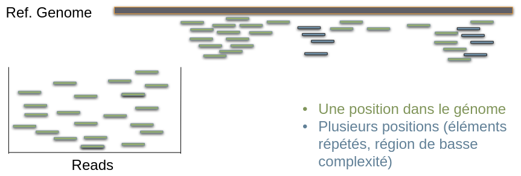
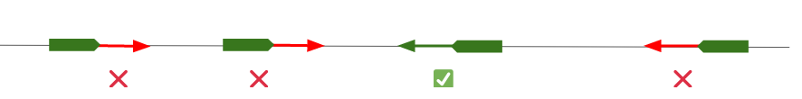
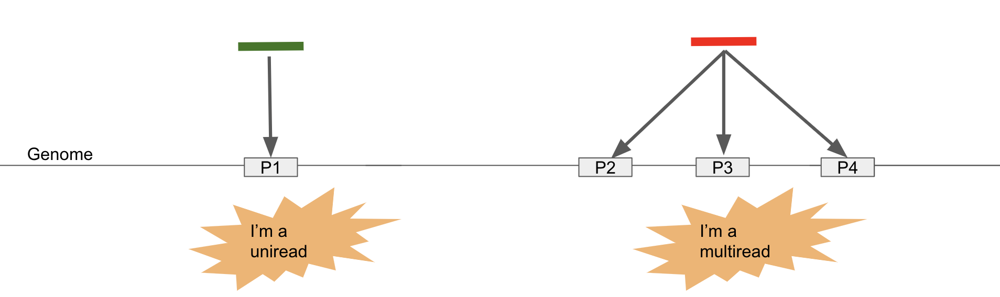
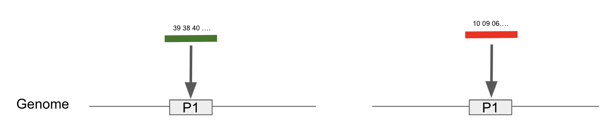

Mapping
Contents
Mapping#
Aligner les reads#
Objectif : Trouver la région du génome qui a produit les read
Trouver dans le génome le mot correspondant au read

L’approche de bowtie: seed and extend#
Une extrémité du read est interrogée (la graine)
On cherche ses régions correspondantes sur le génome (à l’aide d’un index créé initialement) avec ou sans mismatch.
On teste si le reste du read s’aligne avec la séquence

Aligner les reads#
Pour l’alignement nous utiliserons Bowtie 2
Bowtie 2 nécessite de préparer un index
Cet index permet une recherche optimisée de la position d’un mot w dans le génome
Des index pour les génomes utilisés classiquement sont disponibles sur le site de bowtie 2 et aussi dans les banques du cluster (ex.
/shared/bank/homo_sapiens/hg38/)Ici nous voulons restreindre le génome au chromosome 21, nous devons donc construire cet index
# Créez un répertoire pour y stocker l’index dans chip-seq/
cd /shared/projects/form_2022_32/coursLinux/demo/chip-seq/
mkdir index
cd index
Création de l’index#
Warning
Ne faire qu’une seule fois par génome d’intérêt et version majeure !
Allez sur le site de l’UCSC à l’adresse suivante
Cliquez sur Downloads > Genome Data > human > hg38 > Data set by chromosome.
Recherchez le fichier chr21.fa.gz
Cliquez bouton droit “Copy link address”
# Téléchargez l’index avec wget
wget http://hgdownload.soe.ucsc.edu/goldenPath/hg38/chromosomes/chr21.fa.gz
--2022-11-14 18:29:09-- http://hgdownload.soe.ucsc.edu/goldenPath/hg38/chromosomes/chr21.fa.gz
Resolving hgdownload.soe.ucsc.edu (hgdownload.soe.ucsc.edu)... 128.114.119.163
Connecting to hgdownload.soe.ucsc.edu (hgdownload.soe.ucsc.edu)|128.114.119.163|:80... connected.
HTTP request sent, awaiting response... 200 OK
Length: 12709705 (12M) [application/x-gzip]
Saving to: ‘chr21.fa.gz’
100%[======================================>] 12,709,705 7.20MB/s in 1.7s
2022-11-14 18:29:11 (7.20 MB/s) - ‘chr21.fa.gz’ saved [12709705/12709705]
Il est possible de visualiser un fichier compressé avec zcat (z (zip) + cat)
zcat chr21.fa.gz | head
>chr21
NNNNNNNNNNNNNNNNNNNNNNNNNNNNNNNNNNNNNNNNNNNNNNNNNN
NNNNNNNNNNNNNNNNNNNNNNNNNNNNNNNNNNNNNNNNNNNNNNNNNN
NNNNNNNNNNNNNNNNNNNNNNNNNNNNNNNNNNNNNNNNNNNNNNNNNN
NNNNNNNNNNNNNNNNNNNNNNNNNNNNNNNNNNNNNNNNNNNNNNNNNN
NNNNNNNNNNNNNNNNNNNNNNNNNNNNNNNNNNNNNNNNNNNNNNNNNN
NNNNNNNNNNNNNNNNNNNNNNNNNNNNNNNNNNNNNNNNNNNNNNNNNN
NNNNNNNNNNNNNNNNNNNNNNNNNNNNNNNNNNNNNNNNNNNNNNNNNN
NNNNNNNNNNNNNNNNNNNNNNNNNNNNNNNNNNNNNNNNNNNNNNNNNN
NNNNNNNNNNNNNNNNNNNNNNNNNNNNNNNNNNNNNNNNNNNNNNNNNN
gzip: stdout: Broken pipe
# décompression
gunzip chr21.fa.gz
module load bowtie2/2.3.4.3 samtools/1.9 # ici on charge 2 outils à la fois
# Construction de l’index
bowtie2-build chr21.fa chr21_hg38
Settings:
Output files: "chr21_hg38.*.bt2"
Line rate: 6 (line is 64 bytes)
Lines per side: 1 (side is 64 bytes)
Offset rate: 4 (one in 16)
FTable chars: 10
Strings: unpacked
Max bucket size: default
Max bucket size, sqrt multiplier: default
Max bucket size, len divisor: 4
Difference-cover sample period: 1024
Endianness: little
Actual local endianness: little
Sanity checking: disabled
Assertions: disabled
Random seed: 0
Sizeofs: void*:8, int:4, long:8, size_t:8
Input files DNA, FASTA:
chr21.fa
Building a SMALL index
Reading reference sizes
Time reading reference sizes: 00:00:00
Calculating joined length
Writing header
Reserving space for joined string
Joining reference sequences
Time to join reference sequences: 00:00:01
bmax according to bmaxDivN setting: 10022154
Using parameters --bmax 7516616 --dcv 1024
Doing ahead-of-time memory usage test
Passed! Constructing with these parameters: --bmax 7516616 --dcv 1024
Constructing suffix-array element generator
Building DifferenceCoverSample
Building sPrime
Building sPrimeOrder
V-Sorting samples
V-Sorting samples time: 00:00:01
Allocating rank array
Ranking v-sort output
Ranking v-sort output time: 00:00:00
Invoking Larsson-Sadakane on ranks
Invoking Larsson-Sadakane on ranks time: 00:00:00
Sanity-checking and returning
Building samples
Reserving space for 12 sample suffixes
Generating random suffixes
QSorting 12 sample offsets, eliminating duplicates
QSorting sample offsets, eliminating duplicates time: 00:00:00
Multikey QSorting 12 samples
(Using difference cover)
Multikey QSorting samples time: 00:00:00
Calculating bucket sizes
Splitting and merging
Splitting and merging time: 00:00:00
Avg bucket size: 4.00886e+07 (target: 7516615)
Converting suffix-array elements to index image
Allocating ftab, absorbFtab
Entering Ebwt loop
Getting block 1 of 1
No samples; assembling all-inclusive block
Sorting block of length 40088619 for bucket 1
(Using difference cover)
Sorting block time: 00:00:21
Returning block of 40088620 for bucket 1
Exited Ebwt loop
fchr[A]: 0
fchr[C]: 11820664
fchr[G]: 20005908
fchr[T]: 28232289
fchr[$]: 40088619
Exiting Ebwt::buildToDisk()
Returning from initFromVector
Wrote 17557951 bytes to primary EBWT file: chr21_hg38.1.bt2
Wrote 10022160 bytes to secondary EBWT file: chr21_hg38.2.bt2
Re-opening _in1 and _in2 as input streams
Returning from Ebwt constructor
Headers:
len: 40088619
bwtLen: 40088620
sz: 10022155
bwtSz: 10022155
lineRate: 6
offRate: 4
offMask: 0xfffffff0
ftabChars: 10
eftabLen: 20
eftabSz: 80
ftabLen: 1048577
ftabSz: 4194308
offsLen: 2505539
offsSz: 10022156
lineSz: 64
sideSz: 64
sideBwtSz: 48
sideBwtLen: 192
numSides: 208795
numLines: 208795
ebwtTotLen: 13362880
ebwtTotSz: 13362880
color: 0
reverse: 0
Total time for call to driver() for forward index: 00:00:30
Reading reference sizes
Time reading reference sizes: 00:00:01
Calculating joined length
Writing header
Reserving space for joined string
Joining reference sequences
Time to join reference sequences: 00:00:00
Time to reverse reference sequence: 00:00:00
bmax according to bmaxDivN setting: 10022154
Using parameters --bmax 7516616 --dcv 1024
Doing ahead-of-time memory usage test
Passed! Constructing with these parameters: --bmax 7516616 --dcv 1024
Constructing suffix-array element generator
Building DifferenceCoverSample
Building sPrime
Building sPrimeOrder
V-Sorting samples
V-Sorting samples time: 00:00:01
Allocating rank array
Ranking v-sort output
Ranking v-sort output time: 00:00:00
Invoking Larsson-Sadakane on ranks
Invoking Larsson-Sadakane on ranks time: 00:00:01
Sanity-checking and returning
Building samples
Reserving space for 12 sample suffixes
Generating random suffixes
QSorting 12 sample offsets, eliminating duplicates
QSorting sample offsets, eliminating duplicates time: 00:00:00
Multikey QSorting 12 samples
(Using difference cover)
Multikey QSorting samples time: 00:00:00
Calculating bucket sizes
Splitting and merging
Splitting and merging time: 00:00:00
Avg bucket size: 4.00886e+07 (target: 7516615)
Converting suffix-array elements to index image
Allocating ftab, absorbFtab
Entering Ebwt loop
Getting block 1 of 1
No samples; assembling all-inclusive block
Sorting block of length 40088619 for bucket 1
(Using difference cover)
Sorting block time: 00:00:19
Returning block of 40088620 for bucket 1
Exited Ebwt loop
fchr[A]: 0
fchr[C]: 11820664
fchr[G]: 20005908
fchr[T]: 28232289
fchr[$]: 40088619
Exiting Ebwt::buildToDisk()
Returning from initFromVector
Wrote 17557951 bytes to primary EBWT file: chr21_hg38.rev.1.bt2
Wrote 10022160 bytes to secondary EBWT file: chr21_hg38.rev.2.bt2
Re-opening _in1 and _in2 as input streams
Returning from Ebwt constructor
Headers:
len: 40088619
bwtLen: 40088620
sz: 10022155
bwtSz: 10022155
lineRate: 6
offRate: 4
offMask: 0xfffffff0
ftabChars: 10
eftabLen: 20
eftabSz: 80
ftabLen: 1048577
ftabSz: 4194308
offsLen: 2505539
offsSz: 10022156
lineSz: 64
sideSz: 64
sideBwtSz: 48
sideBwtLen: 192
numSides: 208795
numLines: 208795
ebwtTotLen: 13362880
ebwtTotSz: 13362880
color: 0
reverse: 1
Total time for backward call to driver() for mirror index: 00:00:28
Alignement#
On crée un répertoire de travail et on se positionne dans celui-ci On lancera l’alignement dans depuis le dossier ‘bam’.
# Create a directory
mkdir -p ../bam
# Change directory
cd ../bam
Alignement (do not run!)#
Note
Pour des raison pédagogique, nous allons diviser la commande en plusieurs blocs.
Partie 1#
L’alignement est réalisé avec bowtie2, qui produit un flux de texte au format sam (texte), volumineux.
# Perform alignment
bowtie2 -p 4 -x ../index/chr21_hg38 -U ../trimmed/siNT_ER_E2_r3_chr21_trim.fastq \
2> siNT_ER_E2_r3_chr21_trim_bowtie2.log
Partie 2#
L’alignement est réalisé avec bowtie2, qui produit un flux de texte au format sam (texte), volumineux.
Ce flux de texte peut être redirigé (|) vers ‘samtools view -hbS’ (-h: header, -b output is BAM, -S: input is SAM) pour produire une version compressée (format bam).
# -bS (sortie en bam, entrée en sam)
bowtie2 -p 4 -x ../index/chr21_hg38 -U ../trimmed/siNT_ER_E2_r3_chr21_trim.fastq \
2> siNT_ER_E2_r3_chr21_trim_bowtie2.log | samtools view -hbS
Partie 3#
L’alignement est réalisé avec bowtie2, qui produit un flux de texte au format sam (texte), volumineux.
Ce flux de texte peut être redirigé (|) vers ‘samtools view -hbS’ (-h: header, -b output is BAM, -S: input is SAM) pour produire une version compressée (format bam).
On sélectionne le sous-ensemble des reads pour lequel la mapping quality (-q: quality) est au moins égale à 30.
# -q 30 (quality 30)
bowtie2 -p 4 -x ../index/chr21_hg38 -U ../trimmed/siNT_ER_E2_r3_chr21_trim.fastq \
2> siNT_ER_E2_r3_chr21_trim_bowtie2.log | samtools view -hbS -q 30
Partie 4#
L’alignement est réalisé avec bowtie2, qui produit un flux de texte au format sam (texte), volumineux.
Ce flux de texte peut être redirigé (|) vers ‘samtools view -hbS’ (-h: header, -b output is BAM, -S: input is SAM) pour produire une version compressée (format bam).
On sélectionne le sous-ensemble des reads pour lequel la mapping quality (-q: quality) est au moins égale à 30.
Le flux de texte est redirigé (|) vers
samtools sort(trie par coordonnées génomiques).
# Trie l’alignement
bowtie2 -p 4 -x ../index/chr21_hg38 -U ../trimmed/siNT_ER_E2_r3_chr21_trim.fastq \
2> siNT_ER_E2_r3_chr21_trim_bowtie2.log | samtools view -hbS -q 30 | samtools sort
Partie 5#
L’alignement est réalisé avec bowtie2, qui produit un flux de texte au format sam (texte), volumineux.
Ce flux de texte peut être redirigé (|) vers ‘samtools view -hbS’ (-h: header, -b output is BAM, -S: input is SAM) pour produire une version compressée (format bam).
On sélectionne le sous-ensemble des reads pour lequel la mapping quality (-q: quality) est au moins égale à 30.
Le flux de texte est redirigé (|) vers
samtools sort(trie par coordonnées génomiques).Le flux de texte est redirigé dans un fichier (‘>’)
# ‘>’ est un opérateur de redirection
bowtie2 -p 4 -x ../index/chr21_hg38 -U ../trimmed/siNT_ER_E2_r3_chr21_trim.fastq \
2> siNT_ER_E2_r3_chr21_trim_bowtie2.log | samtools view -hbS -q 30 | samtools sort \
> siNT_ER_E2_r3_chr21_trim.bam
Partie 6#
L’alignement est réalisé avec bowtie2, qui produit un flux de texte au format sam (texte), volumineux.
Ce flux de texte peut être redirigé (|) vers ‘samtools view -hbS’ (-h: header, -b output is BAM, -S: input is SAM) pour produire une version compressée (format bam).
On sélectionne le sous-ensemble des reads pour lequel la mapping quality (-q: quality) est au moins égale à 30.
Le flux de texte est redirigé (|) vers
samtools sort(trie par coordonnées génomiques).Le flux de texte est redirigé dans un fichier (‘>’)
Le fichier est indexé pour optimiser la recherche de position dans le BAM (création d’un fichier *.bai).
# Indexation de l’alignement
bowtie2 -p 4 -x ../index/chr21_hg38 -U ../trimmed/siNT_ER_E2_r3_chr21_trim.fastq \
2> siNT_ER_E2_r3_chr21_trim_bowtie2.log | samtools view -hbS -q 30 | samtools sort \
> siNT_ER_E2_r3_chr21_trim.bam
Commande finale#
bowtie2 -p 4 -x ../index/chr21_hg38 -U ../trimmed/siNT_ER_E2_r3_chr21_trim.fastq \
2> siNT_ER_E2_r3_chr21_trim_bowtie2.log | samtools view -hbS -q 30 | samtools sort \
> siNT_ER_E2_r3_chr21_trim.bam
samtools index siNT_ER_E2_r3_chr21_trim.bam
ls
siNT_ER_E2_r3_chr21_trim.bam siNT_ER_E2_r3_chr21_trim_bowtie2.log
siNT_ER_E2_r3_chr21_trim.bam.bai
Fichier bam#
SAM: ‘Sequence Alignment/MAP’
BAM: binary/compressed version of SAM
Stocke les informations liées à l’alignement
Coordonnées du read aligné
Mapping quality
CIGAR String
Bitwise FLAG
read paired, read mapped in proper pair, read unmapped, …
…
Visualiser le contenu du fichier bam#
Le fichier bam est compressé. On peut voir son contenu avec la commande samtools.
# Visualiser le contenu du fichier bam
# On utilise l’argument -h pour visualiser aussi le ‘header’.
# On renvoie le flux de texte dans less.
# On ajoute le paramètre -S pour tronquer les lignes qui excèdent
# la largeur de l’écran
samtools view -h siNT_ER_E2_r3_chr21_trim.bam | less -S
Bitwise flag#
De nombreuses informations sont stockées dans la colonne 2 du fichier SAM/BAM
read pairs
reads mapped in proper pairs
reads unmapped
mates unmapped
reads reverse strand
mates reverse strand
first in pair
second in pair
not primary alignment
…
Détails:
00000000001 → 2^0 = 1 (read paired)
00000000010 → 2^1 = 2 (read mapped in proper pair)
00000000100 → 2^2 = 4 (read unmapped)
00000001000 → 2^3 = 8 (mate unmapped) …
00000010000 → 2^4 = 16 (read reverse strand)
00000001001 → 2^0+ 2^3 = 9 → (read paired, mate unmapped)
00000001101 → 2^0+2^2+2^3 =13 …
…
Un outil est disponible ici pour vous dire à quoi correspond votre valeur.
See also
Voir (Explained SAM flags)[https://broadinstitute.github.io/picard/explain-flags.html]
The extended CIGAR string#
Quelques exemples de drapeaux (flag)
M : match ou mismatch…
I : Insertion par rapport à la référence
D : Délétion par rapport à la référence
N : Espace dans l’alignement (Gap)
See also
Voir (SAM)[http://samtools.sourceforge.net/SAM1.pdf]
ATTCAGATGCAGTA
ATTCA--TGCAGTA
5M2D7M
Pourquoi filtrer sur la qualité ?#
Sommes-nous plus confiants
dans l’alignement du read 1 ?
dans l’alignement read 2 ?

Sommes-nous plus confiants dans l’alignement 1 ?
Si la moyenne de qualité des nucléotides séquencés dans le read est 40 dans l’alignement 1’ ?
Si la moyenne de qualité des nucléotides séquencés dans le read est 10 ?

Filtering for Mapping Quality (MAPQ)#
Mapping quality is a score that integrates both the quality of the read itself and the number of positions it maps
Mapping quality score is computed from the probability that alignment is wrong:
takes mappability and sequence quality into account
-10.log10(Prob(alignment is wrong))
p=0.01 -> MAPQ: 20
p=0.001 -> MAPQ: 30
p=0.0001 -> MAPQ: 40
…